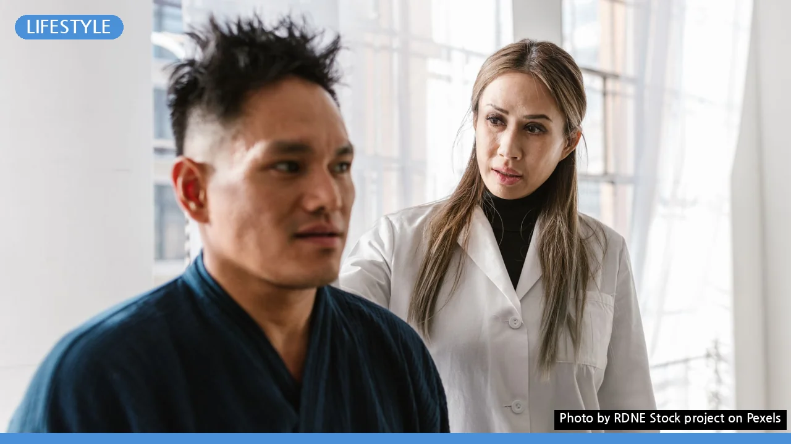
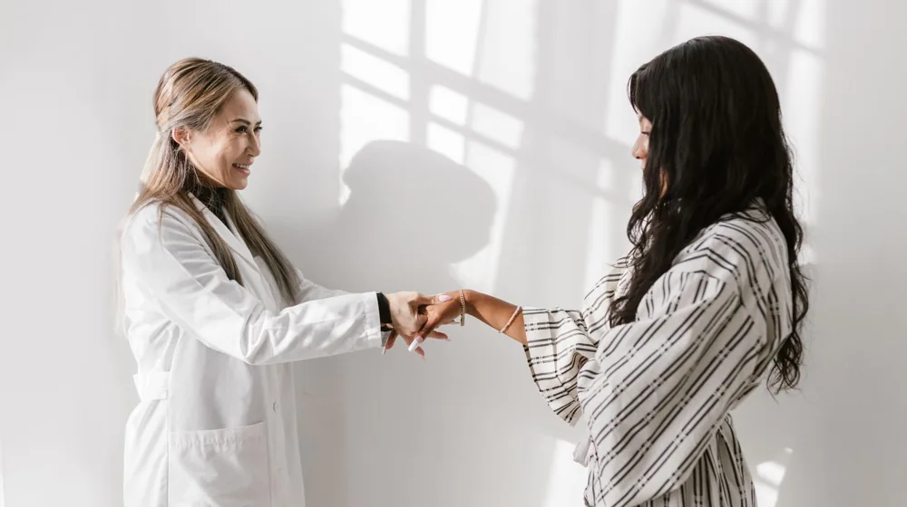

사상체질 진단, 시간 낭비 없이 핵심만! 제대로 체험하는 준비물과 방법
사진: RDNE Stock project / Pexels (무료 이미지, 출처 표기)
내 몸에 딱 맞는 건강법, 사상체질 진단으로 찾아보세요

내 몸에 맞는 건강법을 찾고 계신가요? 사상체질 진단은 한국 전통 의학에서 나의 건강 상태와 타고난 특성을 이해하는 중요한 첫걸음입니다. 막연하게만 생각했던 체질 진단을 시간 낭비 없이, 제대로 체험할 수 있도록 준비물부터 구체적인 절차까지 이 글에서 한 번에 정리해드립니다.
자신의 체질을 알면 식단, 운동, 생활 습관까지 최적화된 건강 관리가 가능해집니다. 이 가이드를 통해 사상체질 진단을 올바르게 이해하고, 건강한 삶을 위한 첫걸음을 내디뎌 보세요.
사상체질 진단, 어디서 체험할 수 있을까?
사상체질 진단을 제대로 받으려면 공신력 있는 기관을 선택하는 것이 중요합니다. 주로 다음과 같은 곳에서 전문적인 진단을 체험할 수 있습니다.
- 한의원 및 한방병원: 가장 일반적이고 접근하기 쉬운 방법입니다. 전문 한의사가 직접 상담하고 진단하여 체질별 맞춤 처방이나 생활 가이드를 제공합니다.
- 한의과대학 부속병원: 좀 더 심층적이고 체계적인 진단을 원하는 경우 추천합니다. 연구 기반의 다양한 검사와 함께 보다 종합적인 건강 관리를 받을 수 있습니다.
- 일부 건강 박람회/웰니스 센터: 단발성으로 체험 이벤트를 진행하는 경우도 있습니다. 이는 체질 진단에 대한 흥미를 유발하는 기회가 될 수 있지만, 심층적인 진단보다는 간략한 체험 위주로 진행될 수 있습니다.
정확한 진단을 위해서는 방문 전 해당 기관의 진료 내용과 한의사의 전문성을 확인하는 것이 좋습니다. 2026년 11월 기준으로, 일부 지역 공공 한의원이나 보건소에서도 체질 개선 프로그램을 운영하기도 하니, 거주지 인근의 정보를 확인해 보세요.
성공적인 사상체질 진단을 위한 준비물과 사전 준비
사상체질 진단은 단순히 몸을 보는 것을 넘어, 개인의 과거 병력과 생활 습관까지 종합적으로 고려합니다. 정확한 진단을 위해 다음 준비물과 사전 준비 사항을 숙지하세요.
- 최근 건강검진 결과지: 혈액검사, 소변검사 등 기본적인 건강 상태를 파악하는 데 도움이 됩니다. 필수는 아니지만, 지참하면 더욱 심도 있는 상담이 가능합니다.
- 현재 복용 중인 약 또는 영양제 정보: 만성 질환으로 복용하는 약이나 건강기능식품이 있다면, 목록을 정리해 가면 진료에 참고가 됩니다.
- 문진표 미리 작성하기: 많은 한의원이나 병원에서 방문 전 온라인 문진표 작성을 권장합니다. 자신의 생활 습관, 스트레스 정도, 소화 상태 등을 미리 정리해두면 상담 시간을 절약하고 더 정확한 정보를 전달할 수 있습니다.
진단 전에는 몇 가지 주의할 점이 있습니다. 과도한 음주나 격렬한 운동은 피하고, 충분한 휴식을 취하여 몸의 자연스러운 상태를 유지하는 것이 좋습니다. 또한, 혀의 상태를 정확히 보기 위해 진단 당일에는 혀에 색이 남는 음식을 피하고, 진한 화장은 삼가는 것이 좋습니다.
사상체질 진단, 실제 체험 과정은?
사상체질 진단은 보통 다음과 같은 절차로 진행됩니다. 기관에 따라 순서나 세부 내용은 달라질 수 있습니다.
- 접수 및 문진표 작성: 병원에 도착하여 접수하고, 자신의 신체 증상, 생활 습관, 성격 등을 묻는 문진표를 작성합니다.
- 원장님 상담 및 망문문절(望聞問切) 진단: 한의사가 환자의 얼굴색, 체형, 음성 등을 관찰(望)하고, 진료에 필요한 질문(問)을 하며, 맥진(脈診, 손목 맥을 짚어 진단)과 복진(腹診, 복부를 눌러 진단), 설진(舌診, 혀를 보고 진단) 등을 통해 몸의 상태를 종합적으로 살핍니다.
- 체질 진단기 활용 (선택 사항): 2026년 11월 현재, 일부 전문 기관에서는 설문지, 음성 분석, 얼굴 분석 등 과학적인 체질 진단 보조 기기를 활용하기도 합니다. 이는 전통 진단과 더불어 객관적인 데이터를 제공하여 체질 판정의 정확도를 높이는 데 기여합니다.
- 체질 판정 및 맞춤형 건강 관리 상담: 모든 진단 과정을 거쳐 자신의 체질(태양인, 태음인, 소양인, 소음인 중 하나)이 최종 판정됩니다. 한의사는 판정된 체질에 따라 식단, 운동, 생활 습관, 약재 등 맞춤형 건강 관리 가이드를 상세히 설명해 줍니다.
진단 결과는 단순한 분류를 넘어, 내 몸을 이해하고 건강하게 관리하기 위한 중요한 정보가 됩니다.
내 체질에 맞는 건강 관리 시작하기
사상체질 진단 후에는 자신에게 맞는 건강 관리법을 꾸준히 실천하는 것이 중요합니다. 다음은 각 체질별 일반적인 특징과 관리 방향을 간략하게 정리한 표입니다.
이 표는 일반적인 정보이며, 개인의 상태에 따라 다를 수 있습니다. 진단받은 전문가와 상의하여 자신에게 가장 적합한 방법을 찾아야 합니다. 한국한의학연구원과 같은 공식 기관의 자료를 참고하여 더 자세한 정보를 얻는 것도 좋습니다.
사상체질 진단 후, 이것만은 꼭 기억하세요
사상체질 진단은 건강 관리에 있어 매우 유용한 도구이지만, 몇 가지 주의할 점이 있습니다.
첫째, 온라인이나 간이 설문지를 통한 자가 진단은 참고용으로만 활용해야 합니다. 전문가의 진단 없이 섣부른 판단으로 특정 식단이나 생활 습관을 고수하는 것은 오히려 건강에 해가 될 수 있습니다.
둘째, 체질은 고정된 것이 아닙니다. 환경, 나이, 생활 습관의 변화에 따라 어느 정도 변화할 수 있습니다. 따라서 한 번 진단받은 체질에 얽매이기보다는, 현재의 내 몸 상태에 귀 기울이고 필요하다면 주기적으로 재진단을 받는 것도 좋은 방법입니다.
마지막으로, 진단 결과는 건강 관리를 위한 '가이드'일 뿐 절대적인 규칙이 아닙니다. 자신에게 맞는 최적의 방법을 찾아 꾸준히 실천하는 것이 가장 중요합니다. 전문가의 조언을 바탕으로 건강한 식단, 꾸준한 운동, 충분한 휴식을 병행하며 균형 잡힌 삶을 유지해 나가세요.
🔗 이 글도 함께 보면 좋아요: 태양인? 소양인? 내 체질은 뭘까? 사상체질 진단 체크리스트 가이드